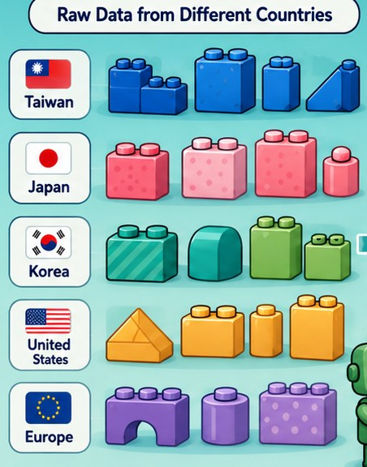
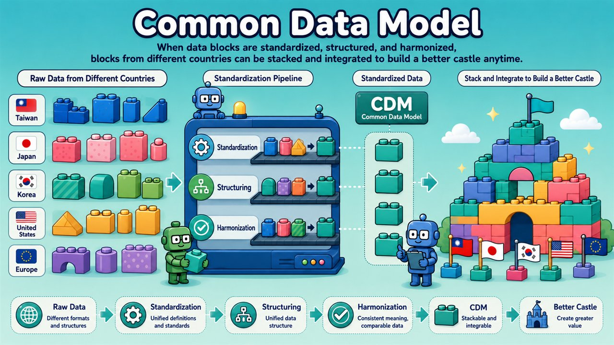

Methods & Technology
The complete path from a research question to decision-grade evidence — standardized, distributed and reproducible.
The pipeline
Ten steps, one consistent framework
Different bricks, different countries
The IMPRESIVE build
Every partner country brings its own set of bricks — different shapes, different colours. IMPRESIVE clicks them together into one shared build.

The common data model
Different bricks, one shared model
Every country's data starts as differently shaped bricks. Standardization clicks them into one common data model — so they stack into a single, comparable build.

Each country brings claims or EHR data in different formats and code systems.
Variables, diagnoses and drugs mapped to shared definitions.
Reshaped into one common table structure.
The same meaning everywhere, so results are comparable.
One common data model a single analytic program can run on.
Countries stack into integrated, decision-ready evidence.
In depth
How each capability works
1 · Question Formulation
We help translate clinical, policy or industry problems into executable research questions. A topic well-suited to IMPRESIVE has:
- A clear disease or treatment decision need
- A well-defined target population
- Explicit exposure, comparator and outcome
- A definable time-zero
- Genuine comparative value across countries
- Clinical, policy, regulatory or industry significance
2 · Database Standardization
Different national data structures are standardized to a common format and shared variable definitions so a single analytic program can run everywhere. This includes:
- Source data profiling
- Variable mapping
- Diagnosis code mapping
- Drug code mapping
- Procedure code mapping
- Outcome definition mapping
- Data quality check
- Fit-for-purpose assessment
3 · CDM Conversion
A common data model lets different databases support multi-country analysis with a consistent data structure — while keeping local data governance fully intact.
4 · Analysis Modules
Reusable, standardized analysis modules:
- Cohort study module
- Target trial emulation module
- Self-controlled design module
- Negative control module
- Transportability module
- Disease burden module
- Treatment pattern module
- Meta-analysis module
- Evidence synthesis module
5 · Distributed Analytics
Individual-level raw data never leaves each country's data center. What IMPRESIVE shares is the common protocol, standardized analytic code, data-quality diagnostic reports and aggregated statistical results.
6 · Evidence Integration
Integration is more than a pooled estimate — it is understanding why results are the same, different, or not comparable across countries:
- Country-specific estimates
- Heterogeneity assessment
- Random-effects meta-analysis
- Sensitivity analysis
- Subgroup analysis
- Negative control interpretation
- Transportability assessment
- Contextual interpretation
7 · Results Visualization
Visualization tools turn cross-national results into forms that are easy to understand and compare:
- Database readiness dashboard
- Country-level result dashboard
- Treatment pattern visualization
- Disease burden visualization
- Forest plots
- Trend plots
- Heterogeneity visualization
- Evidence-to-decision summary dashboard
8 · Evidence-to-Decision
The goal is not analysis for its own sake, but support for decisions — integrating statistical results, method credibility, data fitness, clinical meaning and a decision recommendation.
"Evidence is not the end of analysis; it is the beginning of decision."